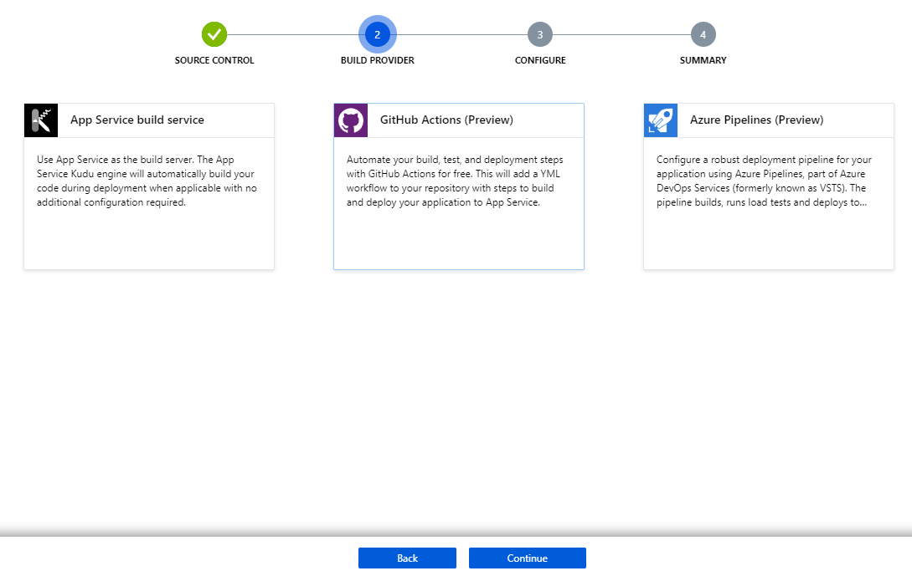

Hosting your webapp on Azure free tier
#1. Why do I need this?
Azure free tier gives a quick and simple way to setup quickly a website for yourself. This could serve as your portfolio website or your blog website or a podcast website etc.
This integrates right back into your GitHub account which allows us to create actions which will automatically re-deploy the webapp on commit to say the master branch.
#2. Prerequisites
Ensure that you have a Github repository with a basic NodeJS webapp. For more information, check out Create a website using NodeJS in 5 mins.
#3. Creating an Azure free trial account
Create an account on Azure at https://portal.azure.com/#home.
Once you create an account and login you'll see the following screen.
Click on "Start a free trial with Azure", follow the steps and activate the Azure free trial. You will be asked for credit card information but it will not deduct any amount unless you ugrade to a paid account.
#4. Creating the resource group and app service
After you enable the free trial, come to the home page https://portal.azure.com/#home and click on create "App Serivces"

Select the "Free Trial" subscription and click on "Create new" for the resource group. A resource group is a logical way to group all assets that belong together.
In our example we are creating a portfolio website. We will create a resource group "portfolio" and we will create our webapp, databases, monitoring tool, storage accounts etc related to my portfolio services within "portfolio" resource group.

Once the resource group is created, select the runtime stack as Node 12 LTS, Publish as "Code", region as "West Europe" (since free tier is limited to few regions only).
App Service plan determines the memory, amount of compute allowed, pricing etc for the webapp. Click on "Create new" under App Service Plan and make sure to select F1 tier under Dev/Test.
Click on "Create + Review" and double check the configuration again.
Once the deployment is complete, you should be able to see two resources under your resource group, one for the webapp and one for the app service plan as follows.

#5. Setting up CI/CD pipeline with Github
Select your app service and click on "Deployment Center" on the side panel.
Select "GitHub" for a continuous integration with a Github repo. It will currently say "Unauthorized", so select it and click on "Authorize" at the bottom.
Login in to your Github account from the pop-up and authorize Azure App Service for Github. Click on "Continue" once complete.
Select "Github actions" as the build provider and click on "Continue".

Select the organization, repo and branch. If it doesn't show up check Github -> Settings -> Applications -> Authorized OAuth Apps and check if Azure App Service is granted.
Review the configuration and click on "Finish".
Open Github and create/open ".github/workflows/master_{app_name}.yml". Ensure that the workflow file is as follows.
name: Build and deploy Node.js app to Azure Web App - allen-portfolio
on:
push:
branches:
- master
jobs:
build-and-deploy:
runs-on: ubuntu-latest
steps:
- uses: actions/checkout@master
- name: Set up Node.js version
uses: actions/setup-node@v1
with:
node-version: '12.x'
- name: npm install, build, and test
run: |
npm install
npm run build --if-present
- name: 'Deploy to Azure Web App'
uses: azure/webapps-deploy@v1
with:
app-name: 'allenphilip-portfolio'
publish-profile: ${{ secrets.AzureAppService_PublishProfile }}
package: .Secrets can be create from Github Repo -> Settings -> Secrets. Create a secret for publishProfile if it's not present.
You can download the publishProfile for the app service from the Azure portal and copy-paste the contents of the file into the secret.
Check the status of the Github action.
Open the webapp from the url in app service Overview.

About The Author
Allen Philip is a passionate software engineer with over 6 years of experience dunking coffee, starring at screen, pulling out hair strands and changing the world one commit at a time.